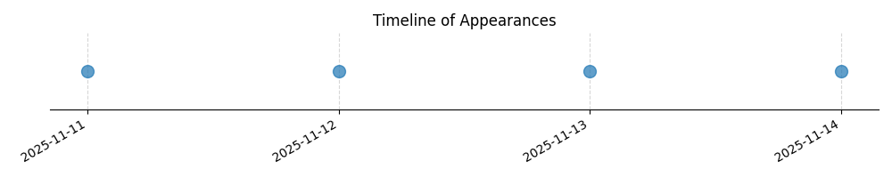

Kategorie: Provozní postupy
Tato otázka se týká bezpečnostních postupů při spouštění motoru ultralehkého letadla (SLZ). Správná odpověď B zahrnuje dva klíčové bezpečnostní prvky: zajištění dostatečného prostoru pro případný nežádoucí pohyb letadla vpřed a zajištění volného prostoru v okolí vrtule, aby nedošlo k poškození nebo zranění během startu motoru. Možnost A se zaměřuje na ruční brzdu a poziční světla, což jsou sice důležité prvky, ale nikoliv primární podmínky pro bezpečné spuštění motoru. Možnost C je neúplná, protože nezahrnuje bezpečnost v okolí vrtule.

| Datum výskytu |
|---|
| 2025-11-14 |
| 2025-11-13 |
| 2025-11-12 |
| 2025-11-11 |